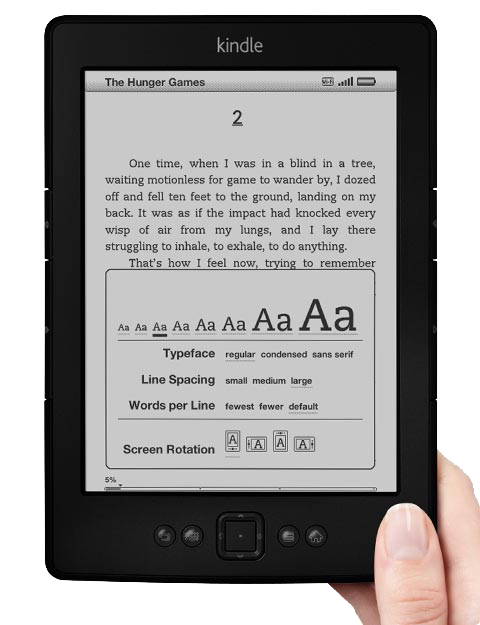

关键词： 电子书 纸制书 Kindle 豆瓣阅读 iPad 阅读革命 信息量/页
自己是个浅度买书爱好者，杂七杂八的书买了也有两三千本，但享受阅读的同时也对纸制书又爱又恨，特别是几次倒腾宿舍、办公室，纸制书成了巨大的负担。印刷术发明后，纸制书作为信息的载体，极大促进了知识的传播，但也有先天不足，比如：1）重，不易运输，搬家、旅行时深有体会。2）占空间。3）不易检索。4）更新慢等等。我有时会感慨，科技革新恨不得以天以月记的今天，纸书这种载体发展了几百年几乎没有革命性变化，实在不符合时代的规律。要说没有变化也不对，纸书确实没太多变化，但就阅读来讲，媒介越来越多。除了纸书，人们已经大量开始用手机，平板，电子书阅读器，电脑，甚至MP3来“读书”。信息获取多元化、电子化的今天，纸制书是否还有出路？答案并不简单。
约半年前自己开始试水电子书阅读，前后尝试了iPad上的iBook, 豆瓣阅读，iPadmini，Kindle PaperWhite，对于主流的电子书平台有了一些体验后我发现，纸制书并没有像很多人鼓吹的一样将马上死去，电子书的形态未来也肯定不是现在的样子。我并不是一个抱残守缺的人，对纸质书的爱好也绝不是所谓的“喜欢那种触感”与“书香”，即便从特别实用的角度看纸制书也有很大的优点。究其原因可能有2点：随意性（不确定性）和信息量/页。
- 随意性、不确定性。首先，纸制书允许你随便翻阅，这种翻阅对阅读很重要，可以从章节、段落中选取感兴趣的点来读。这种不确定定性是电子书无法带来的。其次，纸制书可以随便画写，边角有大量留白可以批注。目前所有的电子书在批注这一点上都无法跟纸版书比较，特别是随意勾画符号、公式等电子书都比较难做到。
- 信息量/页。纸版书对开的排版带给阅读的信息量更大(信息量/页），大脑在选择信息的时候余地更大，择要点而读，可详可略。而且纸版书格式、字体、图表、段落等信息更加丰富，有助于阅读和理解。个人通过综合对比来看，纸制书的阅读速度更快。（仅为个人经验，真正的研究不确定）。
这两点都关乎阅读体验，电子书能否全面超越纸质书，这两点很关键。现在的电子书形态几乎很难在这两点上找到突破，先拿第一点说，电子化带来的是确定性，你一翻开电子书一定是上次你读到的位置，即便“翻一翻”，也要指定一个章节或者页码，这一先天的属性很难改变。第二点受制于电子书屏幕尺寸的限制，只有iPad能呈现最接近纸书的信息量/页，但iPad对于阅读来讲续航时间太短。所以大多数电子书平台纯文字类的，像小说、散文等阅读体验较好，图表信息较多的理工类书阅读体验较差。
我在试过了多种平台的电子书后简单比较如下：
公共的优点：
- 便携，易于携带。
- 存储量大，随便一个终端就可存几千本书，超过一个人一生的阅读量。
- 信息易于检索。
- 电子版书籍比纸版便宜。
公共的缺点：
- 资源有限，但这一点缺点会逐渐消失。
- 传达信息不全面，图表、公式、字体、样式普遍还有问题，而这些信息对于阅读非常重要，特别是对于科技类书籍的阅读。 不同平台的电子书又各有自己的特点：
KINDLE
缺点：
- 不跟手，翻页有明显的延迟。
- 中文支持有限。
- 黑白屏幕会丢失部分书彩色图表带来了信息
优点：
- 背靠亚马逊，资源最多。
- 续航时间最长。
- E-INK技术带来了视觉体验最接近纸制书。
豆瓣阅读
缺点：
- 书目太少。
- 目前图片、表格分辨率低，质量差。
优点：
- 支持终端最多，不同终端间可同步阅读进度。
IPAD：
缺点:
- 对阅读来讲续航时间短。
- 价格较贵。
- 娱乐功能会分散读书注意力。
优点：
- 信息/页 最高，对格式支持最多，iBook对视频、图片支持较好。
阅读是个不断训练的过程，从小我们接触的是纸制书的信息密度，换成电子书后需要有一个再学习的过程。而且现在的电子书还有很多不足，做为纸版书的补充是个不错的选择。
我设想的电子书的终极形态可能就是一本书，想看什么的时候里面的内容就变成什么：）